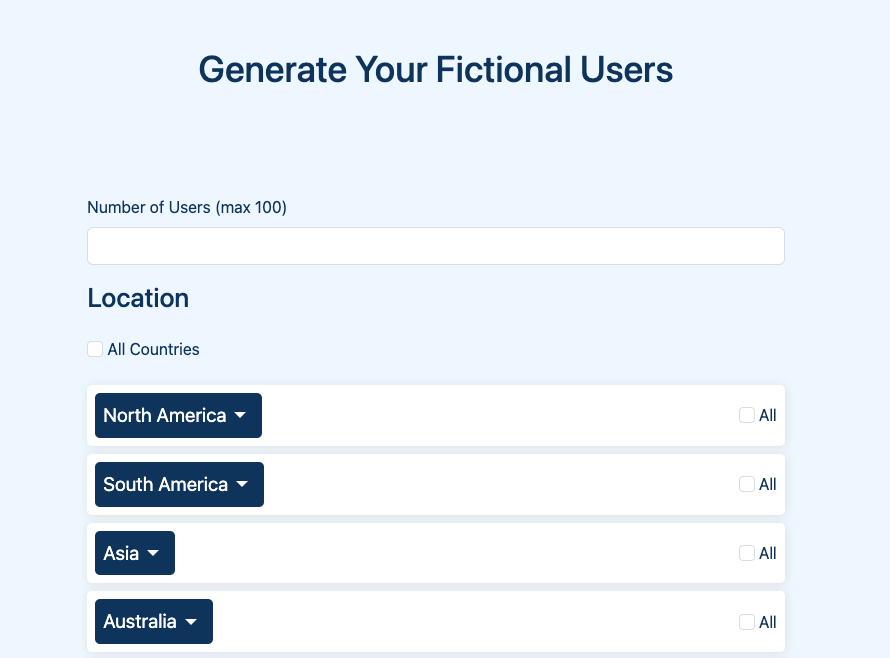
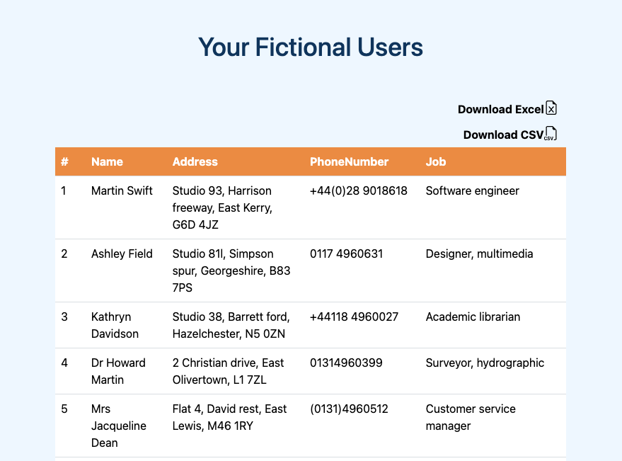

User Generator App
About this project
While creating my previous project, I had need for fictional users to test my app. Hence I decided to create a simple way to make my development faster next time. Technologies used in this projects are Flask, Python, Jinja, HTML, CSS and JavaScript.
Generate fictional users with just few clicks.
You can follow updates on my LinkedIn Profile.
👉 Live site demo

Results to view or download

After getting your users, you can chose to download the data as Excel or CSV file.
Responsive
With use of Bootstrap, the layout is responsive and fitting any screen size.
With Flask combined with WTForms, users have the flexibility to publish new job listings, edit existing ones, activate and deactivate them.